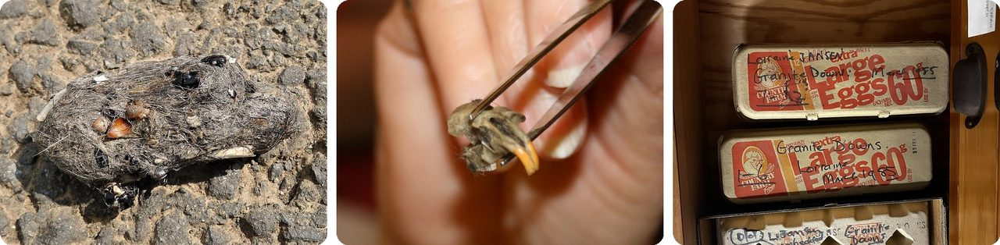
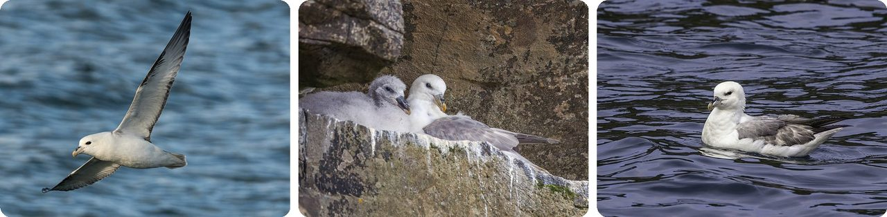
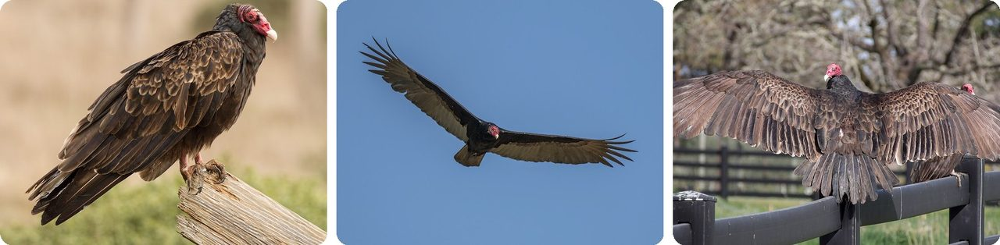
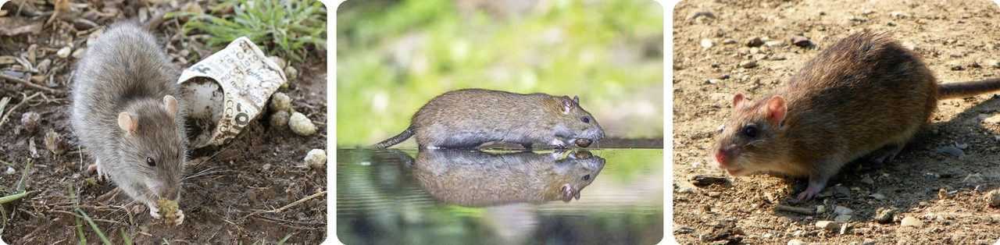
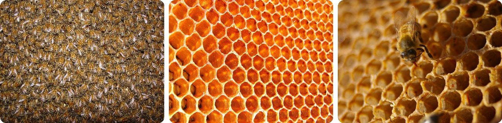
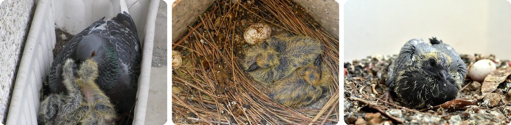
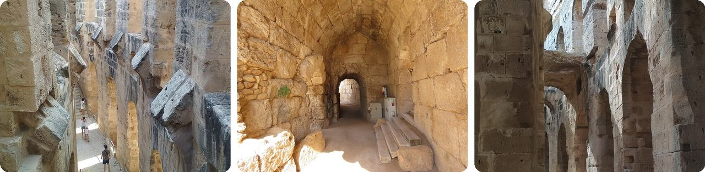
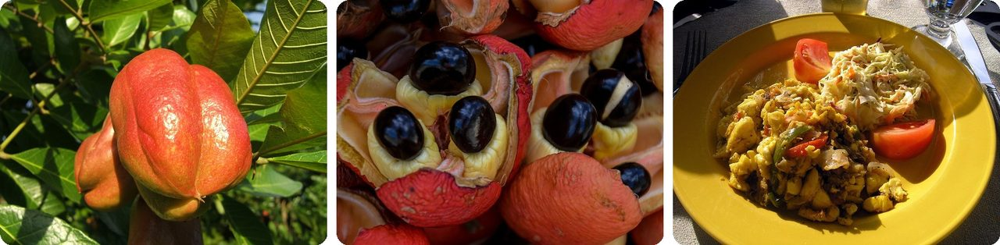
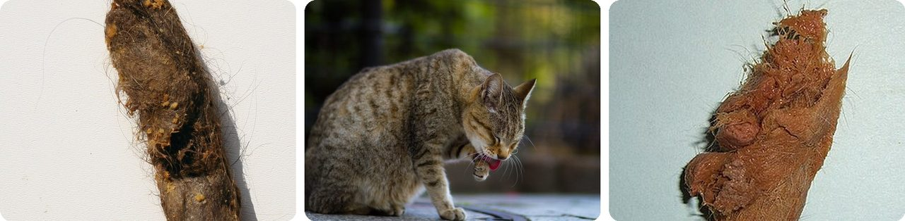

🌍 Top 10 Throw Up and Vomiting
Oct 4, 2026
1. 🦉 Owls cough up neat little packages of bones

An owl swallows a mouse whole, but it can't digest the fur, bones or teeth. Its gizzard (the muscular part of a bird's stomach) squeezes all that leftover junk into a tight bundle called a pellet. About six to ten hours after the meal, the owl throws it back up.
Hawk and owl pellets are grey or brown and about 1 to 2 inches long, roughly the size of your thumb. Throwing them up also scrubs the bird's throat clean on the way out.
Scientists love them. Pull a pellet apart and you get a full menu of what the bird ate, tiny skulls included, and no bird gets hurt.
In other words, it's a lunchbox the owl returns with the wrappers inside.
2. 🌊 Fulmar chicks spray foul stomach oil at attackers

Northern fulmars are gull-like seabirds of the cold northern Atlantic and Pacific. They make a stomach oil out of fats from their food and store it in the front part of their stomach.
When a predator gets close, the bird sprays that oil out of its mouth, even as a young chick. The oil glues the attacker's feathers together into a matted mess, and that can be enough to kill it.
The name gives it away. "Fulmar" comes from Old Norse for "foul gull," after that stinky oil.
Think of it as pepper spray that comes straight from the stomach.
3. 🌎 Turkey vultures defend themselves by vomiting rotten meat

Turkey vultures eat dead animals, and they find them by smelling the gas a body gives off as it starts to rot. Their main defense is to throw that half-digested meal right back up.
The smell drives off most animals trying to raid a nest. If the attacker is close enough, the vomit stings its face and eyes. Even the chicks hiss and throw up when threatened.
There's a practical reason too. After a big meal, a vulture is sometimes too heavy to take off, so it empties its crop (a storage pouch in the throat) to get airborne and escape.
Basically, it dumps its lunch to lighten the load, like throwing sandbags out of a hot air balloon.
4. 🐀 Rats can't throw up, so poison makers use it against them

Rats, mice and other rodents can't vomit at all. Whatever they swallow stays down.
That's why many rat poisons include an ingredient that makes you throw up. If a person swallows some by accident, it comes back out before it can do much harm. The rat can't throw up, so the poison still works on it.
Horses can't vomit either. A bad stomach problem can't just come back up, so it turns into colic (severe belly pain), one of the leading causes of death in horses.
It's a one-way door, and that's a big weakness.
5. 🐝 Honey is nectar that bees throw up again and again

A foraging bee sucks nectar into a special honey stomach that holds about 40 mg, about half its own weight. Filling it can take visits to more than a thousand flowers. Enzymes from the bee's glands start breaking the sugars down on the flight home.
Back at the hive, the forager throws the nectar up for a house bee. That bee keeps bringing it up and blowing bubbles of it between its jaws, which dries it out, then passes it to the next bee in a relay that can last 20 minutes.
Fresh nectar is 70 to 80% water. The bees keep drying it and fanning it until it's only about 18% water, and then it's honey, sealed in wax.
Every spoonful has been through a lot of bee mouths.
6. 🕊️ Pigeon parents feed their babies throw-up "milk"

Baby pigeons can't digest seeds, so both mom and dad make crop milk. The lining of their crop (a pouch in the throat) sheds cells packed with fat and protein, and the parents bring it up into the babies' mouths.
It looks like pale yellow cottage cheese and has more protein and fat than cow's milk. On this diet, a baby pigeon doubles its weight in its first two days.
Pigeons aren't the only ones. Flamingos make crop milk too, and so do male emperor penguins.
Think of it as homemade formula, served straight from the throat.
7. 🏛️ A Roman "vomitorium" wasn't a room for throwing up

There's a popular story that Romans feasting until they were full ran off to a vomitorium to throw up and make room for more. It isn't true.
A vomitorium is a passage behind or below the seats of an amphitheater. The name comes from the Latin word for "to spew forth," because these passages poured huge crowds out quickly at the end of a show. These photos show them at El Jem in Tunisia and Beit Guvrin in Israel.
Theaters still have them. Actors call them "voms" and use them to run on and off stage through the seating.
Basically, it's the Roman word for the stadium exit.
8. 🚀 NASA's "Vomit Comet" makes two out of three riders sick
To give astronauts a taste of floating in space, a plane climbs steeply, then cuts back and follows the same arc as a thrown ball. Everyone inside floats for about 25 seconds.
Then the plane pulls out of the dive, and riders feel about twice their normal weight. A training flight repeats this 40 to 60 times.
About two-thirds of passengers get airsick, which is how the plane earned the nickname "Vomit Comet." The idea of using these arcs to copy weightlessness was first suggested in 1950.
In other words, it's a roller coaster with wings.
9. 🇯🇲 Eating unripe ackee causes "Jamaican vomiting sickness"

Ackee is Jamaica's national fruit, and ackee and saltfish is its national dish. Cooks wait until the red pod splits open on its own (locals say it has "yawned"), then eat only the creamy flesh. Unripe flesh has 20 times more of a poison called hypoglycin A.
The poison stops the body from burning fat for fuel. The body burns through its sugar instead, and blood sugar crashes. Two to six hours after eating, belly pain hits, then sudden vomiting.
Before doctors started treating it with sugar through an IV in 1954, about 80% of severe cases ended in death.
So in Jamaica, a ripe fruit is breakfast and an unripe one is poison.
10. 🐈 Cats throw up hairballs because their tongues swallow fur

Cats clean themselves by licking, and their rough tongues pull loose fur into their mouths. The fur can't be digested, so it packs into a tight tube in the stomach. When it gets too big, the cat throws it up as a hairball.
Rabbits groom the same way but can't throw up, so for them a hairball is an emergency. Cows can't either, and their hairballs are usually found only after they die.
People get them too, rarely. In 2006, doctors in Chicago removed a hairball weighing 4.5 kg, about the weight of a house cat, from an 18-year-old woman's stomach.
Think of it as a cat's lint trap, emptied by mouth.
Fun fact
In 1966, someone in Oregon found a golden eagle pellet and pulled a small metal leg band out of it. The band had been clipped onto an American wigeon, a kind of duck, in southern California just four months earlier, about 1,600 km away. The duck had flown north, and the eagle had eaten it, band and all. Scientists have used leg bands like this for over a century to follow birds on astonishing trips: next time, the wildest bird migrations on Earth.
Photo credits (Wikimedia Commons)
- #1: Owl pellet (51652574469).jpg by gailhampshire, CC BY 2.0
- #1: Rodent Skull from inside an Owl Pellet (flickr) by born1945, CC BY 2.0
- #1: The Owl Pellet Analysis Room at the South Australian Museum 09.jpg by Aliceinthealice, CC0
- #2: Northern fulmar (Fulmarus glacialis) in flight.jpg by Hobbyfotowiki, CC0
- #2: Northern fulmar (Fulmarus glacialis) with chick in nest Flatey.jpg by Charles J. Sharp, CC BY-SA 4.0
- #2: Fulmar (Fulmarus glacialis) on water.jpg by Charles J. Sharp, CC BY-SA 4.0
- #3: Cathartes aura at Tomales Bay.jpg by Frank Schulenburg, CC BY-SA 4.0
- #3: Turkey vulture (Cathartes aura) in flight.JPG by Charles J. Sharp, CC BY-SA 4.0
- #3: Turkey vultures (Cathartes aura) (01747).jpg by Rhododendrites, CC BY-SA 4.0
- #4: Rattus norvegicus - Brown rat 01.jpg by Zeynel Cebeci, CC BY-SA 4.0
- #4: Brown rat (Rattus norvegicus) Drenthe 2.jpg by Charles J. Sharp, CC BY-SA 4.0
- #4: Rattus norvegicus -Fairlands Valley Park, Stevenage, England-8.jpg by AnemoneProjectors (talk), CC BY-SA 2.0
- #5: bees (flickr) by kokogiak, CC BY 2.0
- #5: Honeycomb (flickr) by wildxplorer, CC BY 2.0
- #5: sweet, sweet honey (flickr) by BotheredByBees, CC BY 2.0
- #6: Feral Pigeon feeding squabs, Lithuania.jpg by Dzonatanas, CC BY-SA 3.0
- #6: Young pigeon 1.jpg by Karthik Easvur, CC BY-SA 4.0
- #6: Rock dove 18 days old in its nest and one egg.jpg by Augustus Binu : flickr : Instagram, CC BY-SA 3.0
- #7: Amphitheatre of El Jem vomitorium 03.jpg by AQVA121, CC BY-SA 4.0
- #7: Beit Guvrin Vomitorium 1484.jpg by יעקב, CC0
- #7: Amphitheatre of El Jem vomitorium 01.jpg by AQVA121, CC BY-SA 4.0
- #8: Active Vomit Comet KC-135, N931NA, Ellington Field, Houston 02-11-AI- 4 (31955564451).jpg by Bill Abbott, CC BY-SA 2.0
- #8: Christa McAuliffe Experiences Weightlessness During KC-135 Flight - GPN-2002-000149 (cropped).jpg by NASA, Public domain
- #8: Astronauts in weightlessness.jpg by NASA, Public domain
- #9: Ackee 001.jpg by Jerome Walker, CC BY-SA 3.0
- #9: Ripe ackee fruit in Jamaica. The white flesh is eaten cooked for breakfast, with salt fish or the like. (33317955982).jpg by Ralf Steinberger from Northern Italy and Berlin, CC BY 2.0
- #9: Ackee and Saltfish.jpg by gailf548 from New York State, USA, CC BY 2.0
- #10: Long-haired-cat-hairball.jpg by Tysto, Public domain
- #10: A cat grooming (flickr) by Takashi(aes256), CC BY-SA 2.0
- #10: HairBallTabbyCat.jpg by Themeparkphoto, Public domain
.jpg){kind=link}

_in_flight.jpg){kind=link}
_with_chick_in_nest_Flatey.jpg){kind=link}
_on_water.jpg){kind=link}

_in_flight.JPG){kind=link}
_(01747).jpg){kind=link}

_Drenthe_2.jpg){kind=link}


.jpg){kind=link}
.jpg){kind=link}


.jpg){kind=link}